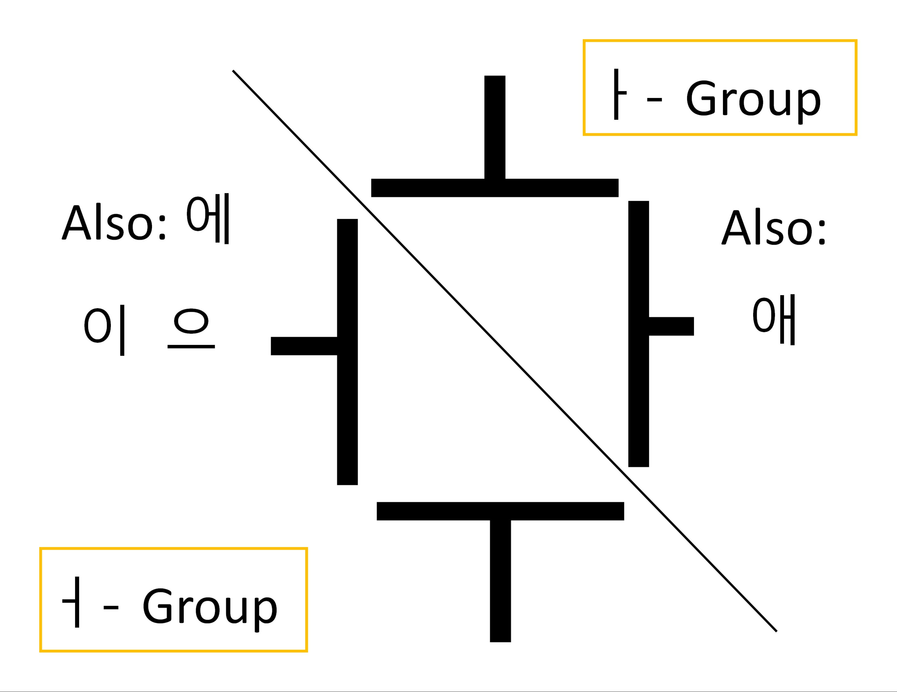

Now here’s the really brilliant part about 한글, and this glue system. Check out this chart.
What this chart shows us is that if we think about Korean vowels visually, we can actually see whether they harmonize with 아 or with 어. So 애, being based on 아, is naturally an 아 verb, and 에 is an 어 vowel since it’s based on 어. Vowels that have an 오 or an 아 in them all harmonize with 아 (like 애, 얘, and 와). The one exception to this rule is 외 (the 이 overrules the 오 in this case). Vowels that have an 어, 우, 에, 으, or 이 in them all harmonize with 어, with no exceptions.
Here’s another chart that includes all of the compound vowels and Y-vowels.
Back when you were first learning the 한글 vowels it wouldn’t have done any good to explain this, but now we can see that with the exception of 외, non-harmonizing vowels cannot be combined to form a compound. It’s really very clean and logical once you see it like this. In fact the main concern now becomes understanding when we can combine, or abbreviate blocks, like with 가아요 becoming 가요.